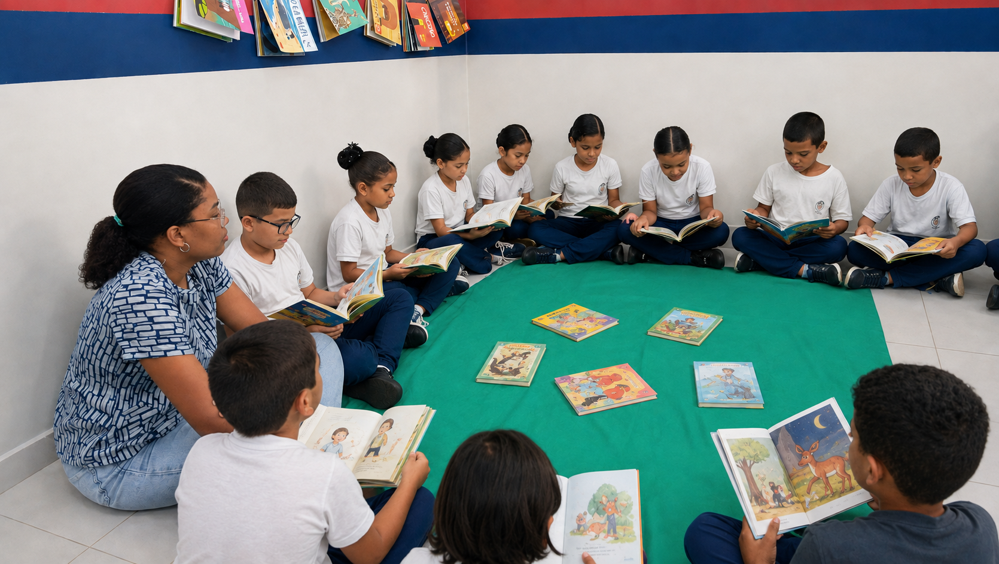
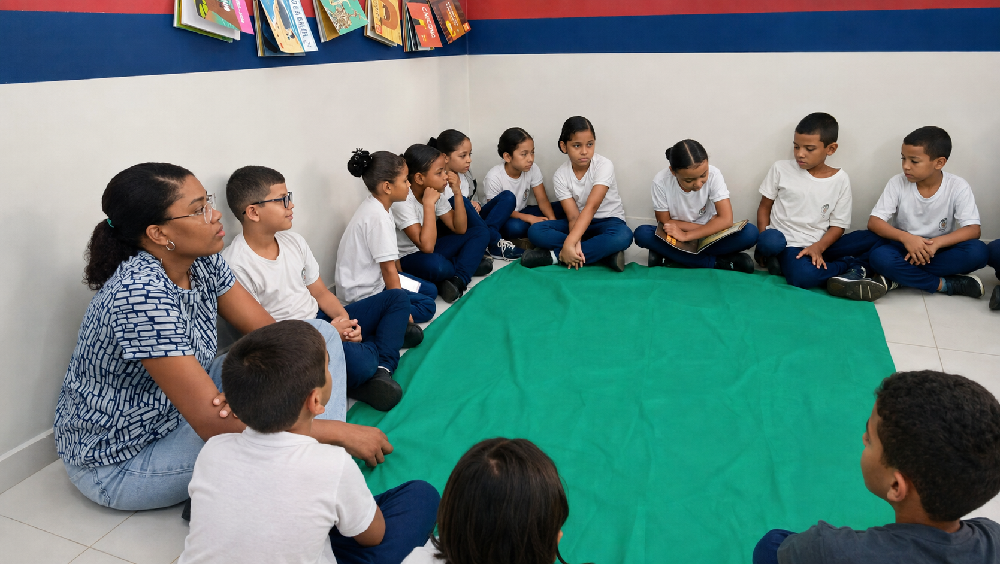

Em sua sala de 2° Ano do Ensino Fundamental, a professora Amanda Sousa desenvolve o Projeto Quarta da Leitura, um momento especial que desperta o amor pelos livros e fortalece a confiança de nossos alunos. A cada quarta-feira, uma criança é escolhida para ser a leitora do dia. Com carinho e dedicação, ela se prepara para compartilhar uma história com toda a turma, tornando-se protagonista de um momento de aprendizado e encantamento. Mais do que uma simples leitura, esse projeto promove autonomia, responsabilidade, segurança ao falar em público e o desenvolvimento da comunicação. Além disso, contribui para a ampliação do vocabulário, da criatividade, da interpretação, da escrita e do pensamento crítico.
A leitura abre portas.

Cada leitura realizada representa uma conquista. A cada página lida, nossos alunos descobrem novos conhecimentos, ampliam seus sonhos e fortalecem habilidades que levarão para toda a vida. Acreditamos que ler é abrir portas para o mundo. Por isso, seguimos incentivando nossas crianças a mergulharem no universo dos livros, pois a leitura transforma, inspira e constrói futuros. Quarta da Leitura: cultivando leitores, formando cidadãos e criando memórias que ficarão para sempre no coração de nossas crianças.